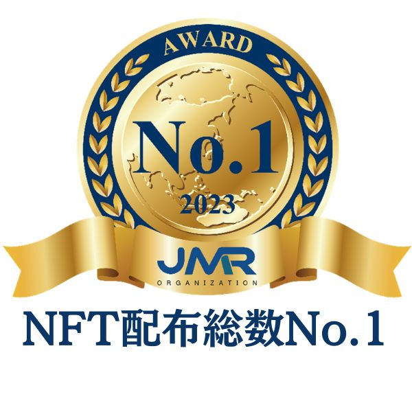
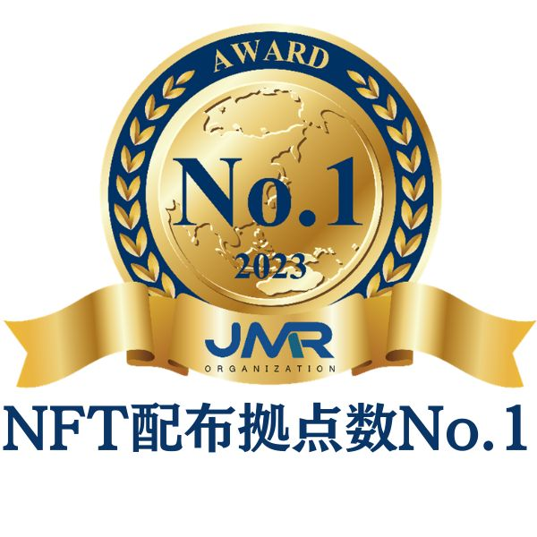
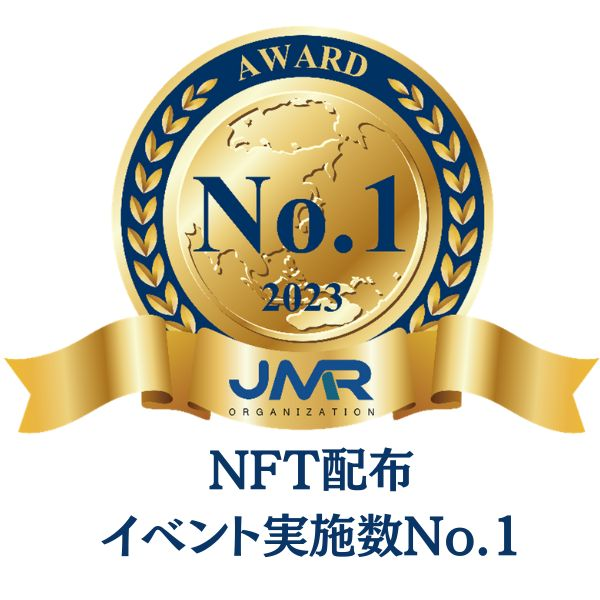

ブロックチェーンを活用したマーケティングで
顧客・ファンとの
新たな接点づくりを。
バラバラだった施策やチャネルで生まれる"その場限りの
接点"を、関係が続いていく"継続的な接点"へ。顧客や
ファンとのつながりを蓄積し、育てていくための新しい
マーケティングソリューションを提供します。
接点"を、関係が続いていく"継続的な接点"へ。顧客や
ファンとのつながりを蓄積し、育てていくための新しい
マーケティングソリューションを提供します。




2023 年 10 月期指定領域における市場調査
（調査機関：日本マーケティングリサーチ機構）
非金融領域における
ブロックチェーン活用のトップランナーとして
上場企業から中堅・中小企業まで
幅広い事業者様を支援